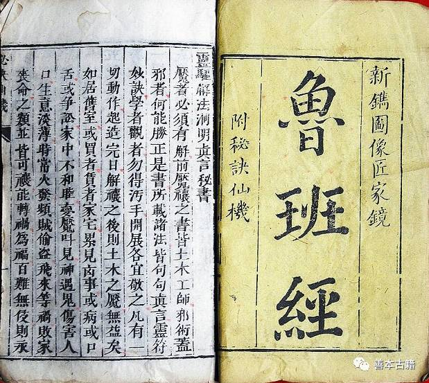
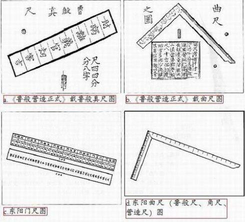
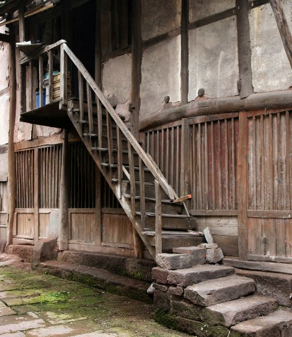
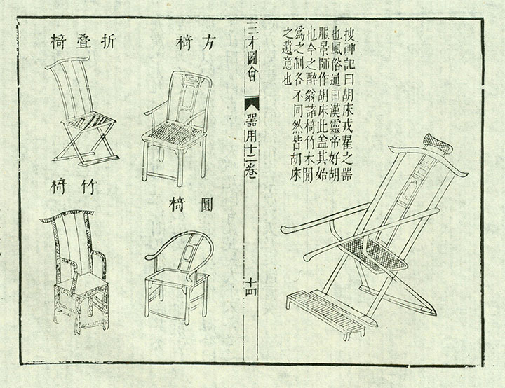

明清民间流传最广的营造经典，由工匠祖师鲁班一脉相传。它不仅是木工营造技艺的百科全书，更融合了风水、营造法度、民俗禁忌与建筑礼仪，是中国民间建筑智慧与工匠信仰的集大成者。

六大维度展现民间营造第一经典的地位
《鲁班经》之所以成为民间营造经典，在于它是技艺、风水、民俗与信仰的完美融合
核心概念：系统记载民间房屋、厅堂、楼阁、门楼、庭院的营造尺寸、结构做法、施工流程，是民间工匠的实操手册。
何以伟大：统一了全国民间建筑的营造标准，让普通民居、祠堂、庙宇都有规范可循，是乡土建筑传承千年的技术根基。
核心概念：详细规定房屋朝向、开间尺寸、高低比例、门窗位置、梁柱布局的风水宜忌，兼顾居住安全与民俗信仰。
何以伟大：将建筑技术与民俗文化深度结合，形成中国独有的民间营造哲学，让房屋不仅是居所，更是文化与信仰的载体。
核心概念：记载榫卯结构、家具制作、木构件加工、雕刻工艺、工具使用等全套木工技艺，图文对照，通俗易懂。
何以伟大：让高深的木工技艺得以口传心授、书面传承，保护了大量濒临失传的民间工艺，是传统木作技艺的宝库。
核心概念：包含上梁仪式、开工祭祀、工匠禁忌、行业规矩，是古代工匠行业的行为准则与精神信仰。
何以伟大：构建了中国工匠独有的文化体系与职业信仰，让营造技艺与人文精神共生，成为中华文明乡土文化的重要组成。
一部民间经典，如何塑造中国数百年乡土建筑与工匠文化？
鲁班创造木工工具与营造技艺，奠定中国木构建筑基础，成为后世工匠共同信仰的祖师。
《鲁班经》正式编订成书，融合技艺、风水、民俗，成为民间工匠必读经典。
在全国各地广泛流传，成为民居、祠堂、庙宇、家具营造的统一标准。
依靠工匠师徒传承，继续支撑中国民间建筑与家具制作体系。
成为传统木作、古建筑修复、非遗传承的重要文献，重新焕发文化价值。
作为中国民间营造文化的象征，持续影响传统建筑保护与乡土文化复兴。



《鲁班经》的伟大，在于它扎根民间、守护技艺、传承信仰，将最朴素的营造智慧升华为中华文明的文化基因。它是一把尺，丈量出民间建筑的烟火气息；它是一座桥，连接起传统手艺与乡土文化的根脉。